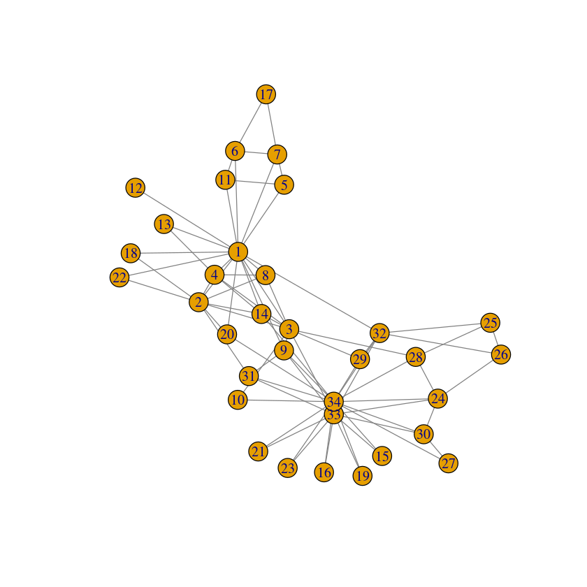
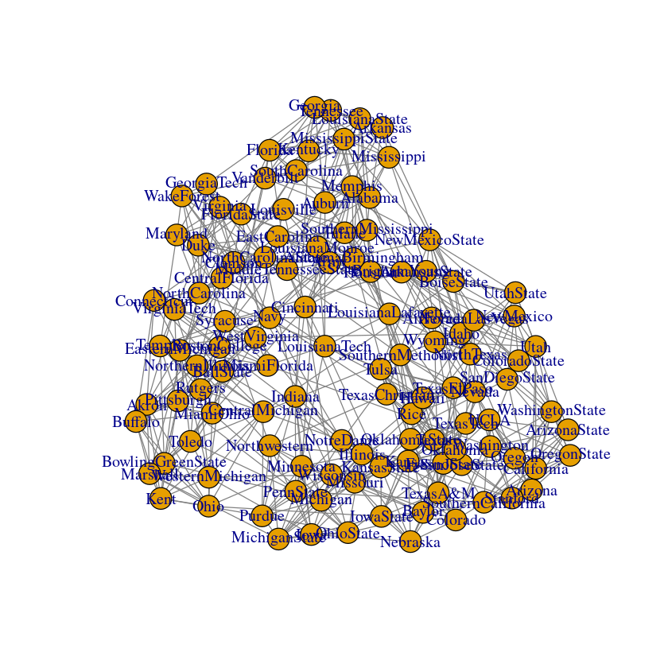
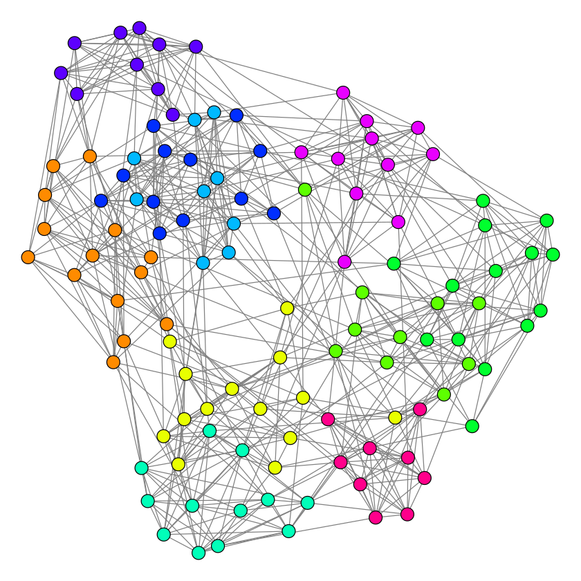
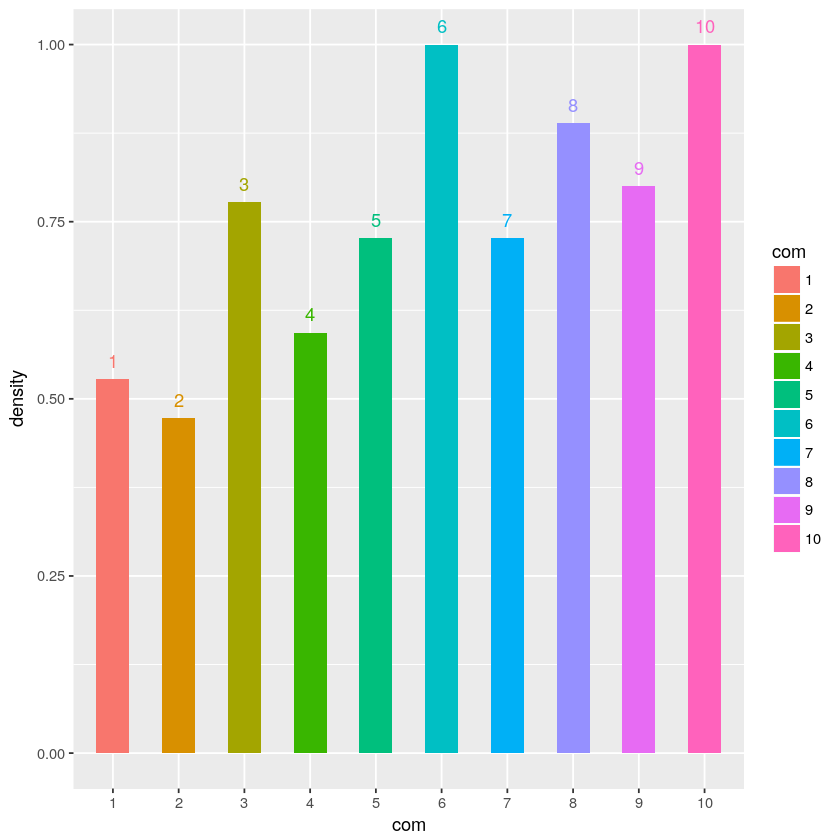
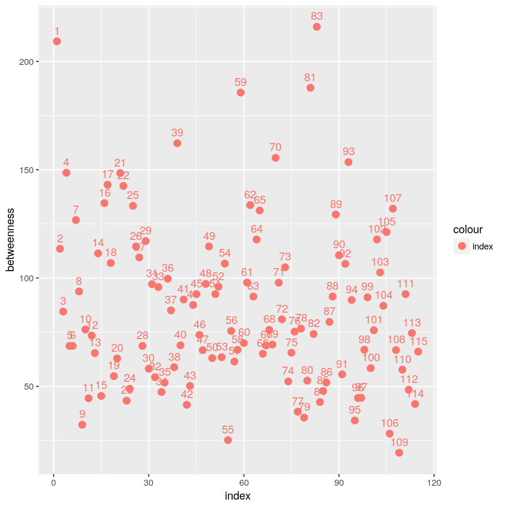
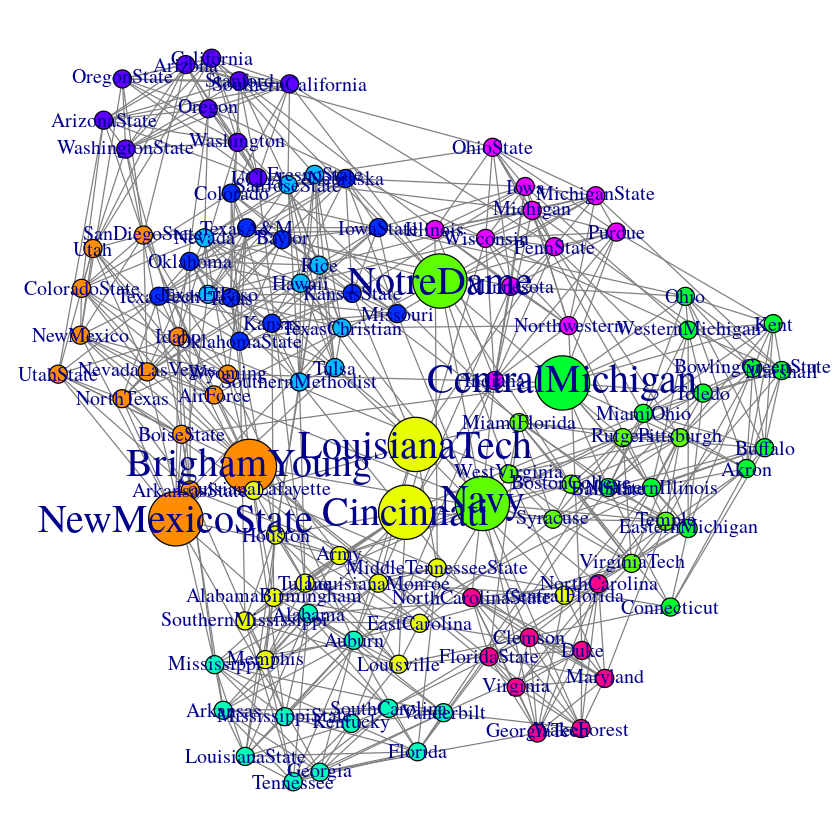

A real network dataset analysis
graph sample
1 2 3 4 5 6 7 8
| g <- make_graph("Zachary") plot(g,layout = layout.fruchterman.reingold, vertex.size = 10, vertex.color = V(g)$color, edge.color = grey(0.5), edge.arrow.mode = "-")
|

1 2 3 4 5 6 7 8 9
| gg=read_graph(file = "football.gml",format = "gml") plot(gg,layout = layout.fruchterman.reingold, vertex.size = 10, vertex.color = V(gg)$color, edge.color = grey(0.5), edge.arrow.mode = "-")
|

1 2
| com=cluster_walktrap(gg, weights = E(gg)$weight, steps = 4, merges = TRUE, modularity = TRUE, membership = TRUE)
|
1 2 3 4 5 6 7 8 9 10 11 12
| V(gg)$sg = com$membership+1 V(gg)$color = rainbow(max(V(gg)$sg))[V(gg)$sg] par(mar = c(0, 0, 0, 0)) set.seed(14) plot(gg, layout = layout.fruchterman.reingold, vertex.size = 5, vertex.color = V(gg)$color, vertex.label = NA, edge.color = grey(0.5), edge.arrow.mode = "-") print(max(V(gg)$sg)-1)
|
[1] 10

subgraph density
1
| subgraph_1 = split(com$merges, com$membership)
|
Warning message in split.default(com$merges, com$membership):
“data length is not a multiple of split variable”
20 19 4 13 82 62 141 162 207 221 35 96 27 128 143 173 172 187 223 226
0.0935163996948894
1 2
| sg8=subgraph(gg,V(gg)[sg==8]) graph.density(sg8)
|
Warning message in .Call("R_igraph_subgraph", graph, as.igraph.vs(graph, v) - 1, :
“At structural_properties.c:1945 :igraph_subgraph is deprecated from igraph 0.6, use igraph_induced_subgraph instead”
0.727272727272727
1 2 3 4 5 6 7 8
| library(ggplot2) sg_d=c() for(i in (1:10)){ sg_t=subgraph(gg,V(gg)[sg==(i+1)]) d=graph.density(sg_t) sg_d[i]=d }
|
1 2 3 4 5 6
| data_d=data.frame(com=c(as.character(1:10)),density=sg_d) data_d$com = factor(data_d$com, levels=data_d$com) p = ggplot(data_d, aes(x=com, y=density, fill=com,group=factor(1))) +geom_bar(stat="identity", width=0.5, position=position_dodge(0.6)) + geom_text(aes(label = com, vjust = -0.8, hjust = 0.5, color = com), show.legend = FALSE) plot(p)
|

node betweenness
1 2 3 4 5 6 7 8 9 10
| V(gg)$bte = betweenness(gg, directed = F) par(mar = c(0, 2, 0, 0)) data_v=data.frame(index=1:length(V(gg)),betweenness=V(gg)$bte) p = ggplot(data_v,aes(x=index,y=betweenness,colour="index")) +geom_point(size=3) + geom_text(aes(label = index,vjust = -0.8, hjust = 0.5), show.legend = FALSE) plot(p)
|

1 2 3 4 5 6 7
| V(gg)$size = 5 V(gg)[bte>=150]$size = 15 V(gg)$cex=1 V(gg)[bte>=150]$cex=2
|
1 2 3 4 5 6 7 8 9
| par(mar = c(0, 0, 0, 0)) set.seed(14) plot(gg, layout = layout.fruchterman.reingold, vertex.size = V(gg)$size, vertex.color = V(gg)$color, vertex.label = V(gg)$label, vertex.label.cex=V(gg)$cex, edge.color = grey(0.5), edge.arrow.mode = "-") V(gg)[bte>=150]$label
|
'BrighamYoung' 'CentralMichigan' 'LouisianaTech' 'NewMexicoState' 'Navy' 'NotreDame' 'Cincinnati'

a sample of recommendation
1 2
| neighbors(gg,V(gg)$label=="BrighamYoung") V(gg)[5]$label
|
+ 12/115 vertices:
[1] 2 5 10 17 24 34 36 42 66 91 94 105
'NewMexico'
based on betweenness
1 2 3 4 5 6 7 8 9 10 11 12 13 14 15 16 17 18 19
| tmp1 = setdiff(V(gg),neighbors(gg,V(gg)$label=="NewMexico")) tmp1_bte=V(gg)[tmp1]$bte t=tmp1_bte names(t)=tmp1 listall = sort(t, dec = T) top = listall[1:length(t)] t1 = top[1:5] t1_names=V(gg)[as.integer(names(t1))]$label names(t1)=t1_names t1
|
NotreDame 215.98577427622
Navy 187.826344074865
LouisianaTech 185.647805653186
CentralMichigan 162.228191494366
Cincinnati 153.529962162747
based on common friends
1 2 3 4 5 6 7 8 9 10 11 12 13 14 15 16 17 18 19 20 21
| t_n=neighbors(gg,V(gg)$label=="NewMexico") t_nn=setdiff(V(gg),t_n) t_nn=t_nn[-which(t_nn==5)] t_nn_ld=c() t_nn_=c() i=0 for(t_ in t_nn){ d=sum(neighbors(gg,t_) %in% t_n) if(d>=1){ i=i+1 t_nn_ld[i]=d t_nn_[i]=t_ }else{ } } t_nn_linkdegree_dic=t_nn_ld names(t_nn_linkdegree_dic)=t_nn_
|
1 2 3 4 5
| t_nn_ld_=sort(t_nn_linkdegree_dic,dec=T) if(length(t_nn_ld_)>=5){ t_nn_ld_=t_nn_ld_[1:5] }
|
[1] "rec :"
91 5
12 4
23 3
68 3
79 3
1 2 3 4 5
| print("names :") for (i in (1:length(t_nn_ld_))){ t_nn_ld_[i]=V(gg)[as.integer(names(t_nn_ld_[i]))]$label } t_nn_ld_
|
[1] "names :"
91 'UtahState'
12 'NorthTexas'
23 'Arizona'
68 'Nevada'
79 'WashingtonState'
Reference
http://cos.name/2011/04/exploring-renren-social-network/